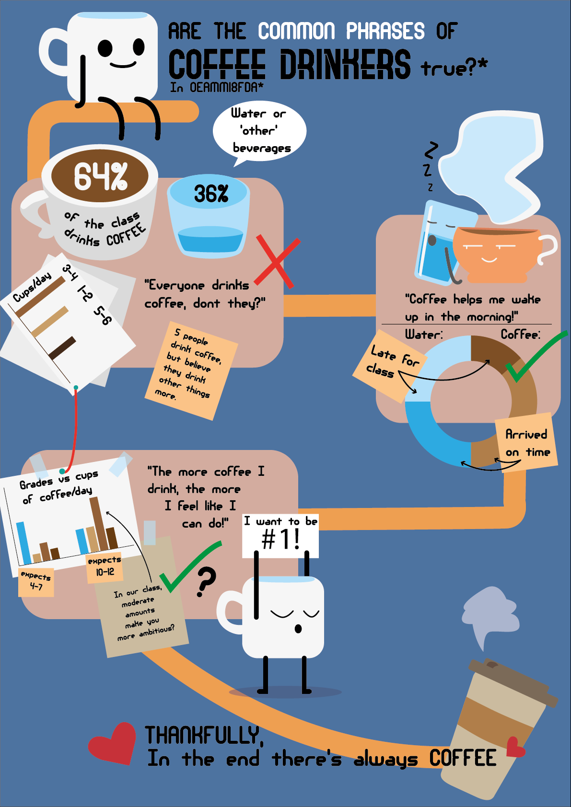

So, infographics. Telling a story with data, a story you can control by picking what data should be used and creating funny little illustrations that furthers your narrative.
But what -is- an infographic? Simply put its a way to show data visually in an engaging way that helps make it more easily understand it for someone who is not interested in spending hours wrapping their head around what all the numbers mean.
You could say its a data visualization - its data that has been visualized after all, isnt it?
Not quite.
A data visualization is typically much more objective and straightforward, it doesnt necesarily contain pictures of apples even if the numbers are depicting apple-consumption rates. You could say a data visualization is the 'proof' behind your infographic, its the pie- and bar-charts. Its the ones that shows tangible data, usually with more numbers than text.
An infographic then presents those data visualizations with a narrative in mind.
Take for example this infographic that I made, based on a survey taken by my multimedia design class;

It makes use of things like the pie-chart but it also shows data in even more visual ways, like the coffee cup being larger than the water cup because more people in the class drinks coffee. The cup-example goes to show that an infographic doesnt necesarily need data visualizations in order to work, nor is data visualizations unable to stand on their own, but they work well when put together.
Like strawberries and cream, both are good in their own right, but they taste great when combined.
My work process when creating an inforgaphic:
Since this was only an exersize, I wasn't intending to dig very deep onto the data to find something exciting. Instead I was focusing on what might be mainstream, something people was used to seeing so I could build on top of already established tropes.
I got the idea that I could see if the 'stereotypes' or 'common phrases' associated with coffee drinkers held up in our class and tried to see if there was any correlation between certain bits of data. I didnt find much, but I found enough to build a believable narrative - playing around with the presentation of the data would in the end let me say what I wanted to say.
But I needed something to compare the coffee drinkers to, and while water -was- the other largest 'faction' of drinkers in the class, I wanted to lump the other drinks in alongside it - but still use water as the other mascot.
That choice also allowed me to use colors to showcase what data belonged to the 'other' drinkers, and which belonged to coffee by using brown and blue hues.
Additionally, this was a big exersize for me in regards to illustrator skills. I never considered myself a pro, but I certainly feel more capeable organizing big files with lots of assets as well as creating a multitude of sprites that all have the same feel/style. I feel like I got a pretty good flow going in the graphic, training my skills in visual 'storytelling' and how I guide the eye around a page.